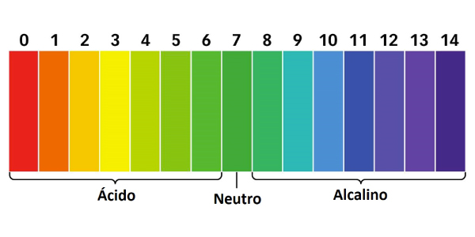
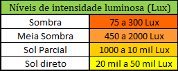
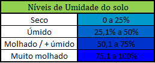

Como usar o FarmBud ?
"O FarmBud é um instrumento que foi pensado em seu design e funcionamento da forma mais simples possível para que o usuário não tenha problemas".
ㅤㅤㅤNo dispositivo haverá 4 (quatro) botões para a navegação entre telas: Seta para esquerda (<), Seta para direita (>), Voltar e Enter. Para navegar entre os fatores, basta clicar nas setas até o fator desejado, ao encontrar a tela do fator desejado aperte o botão "Enter" para visualizar os dados obtidos pelo dispositivo, com o botão apertado abrirá uma caixa com o sensor e ao terminar a visualização basta empurrar a caixa até fechar e clicar no botão de "Voltar" para retornar ao menu.

Ph do solo
ㅤㅤㅤAo clicar para visualizar o fator de pH do solo abrirá uma caixa do lado inferior esquerdo, no qual terá uma sonda, com a caixa aberta é só inserir a sonda no solo que deseja descobrir o seu nível de pH. Os dados apresentados na tela serão exibidos em uma escala entre 0 e 14, onde entre 0 e 6,9 significa solo com pH ácido, 7 pH do solo neutro, e 7,1 e 14 ph do solo básico. Para valores ideias consultar dentro do site na aba Vegetais.
Temperatura
ㅤㅤㅤAo clicar para visualizar o fator de temperatura abrirá uma caixa do lado direito do dispositivo, com a caixa aberta é só esperar o obtenção dos dados pelo sensor. Os dados serão apresentados em °C (Graus celsius). Para valores ideias consultar dentro do site na aba Vegetais.
Luminosidade
ㅤㅤㅤAo clicar para visualizar o fator de Luminosidade abrirá uma caixa do lado esquerdo do dispositivo, com a caixa aberta é só esperar o obtenção dos dados pelo sensor. Os dados serão apresentados de uma forma simples e fácil de entender (Sombra, Meia Sombra, Sol parcial e Sol direto) e também na unidade de medida "Lux". Para valores ideias consultar dentro do site na aba Vegetais.
Umidade do solo
ㅤㅤㅤAo clicar para visualizar o fator de pH do solo abrirá uma caixa do lado inferior direto, no qual terá uma sonda, com a caixa aberta é só inserir a sonda no solo que deseja descobrir o seu nível de umidade do solo. Os dados apresentados na tela serão apresentados em um grau de porcentagem (%) e com seu respectivo significado em uma forma mais clara (Solo seco, solo úmido, solo molhado/+ úmido, solo muito molhado. Para valores ideias consultar dentro do site na aba Vegetais.
